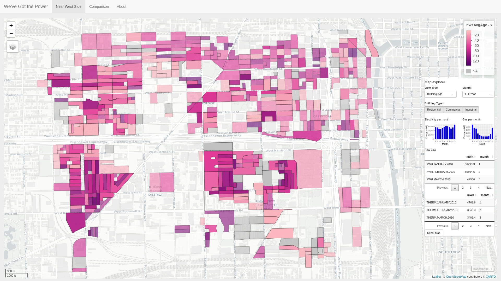
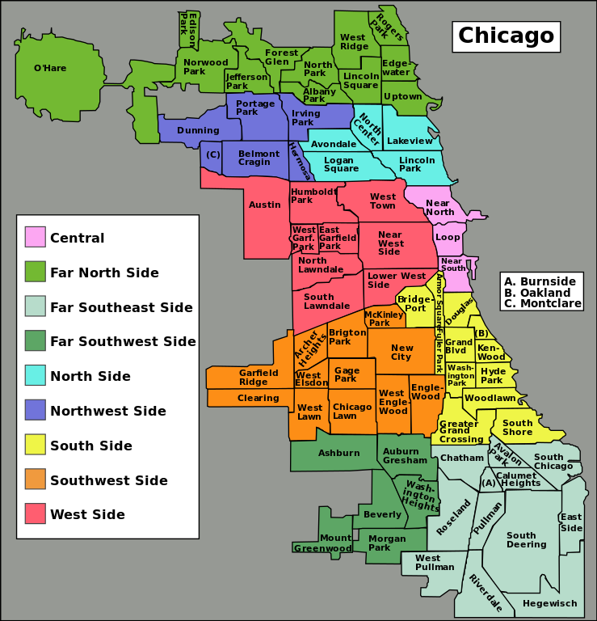
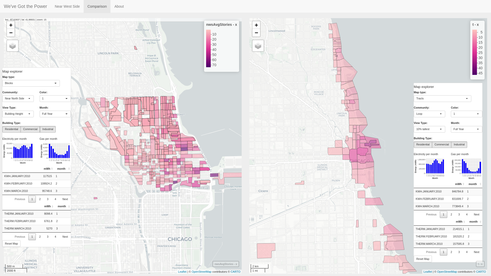
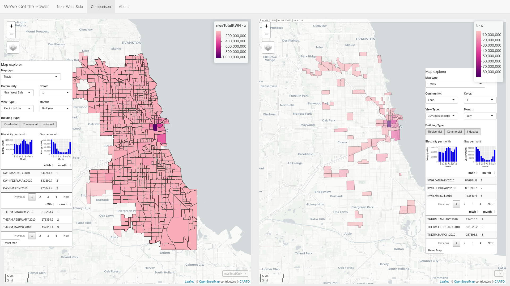
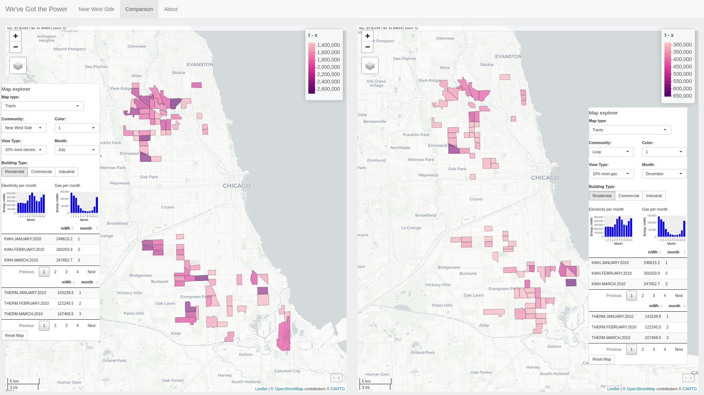
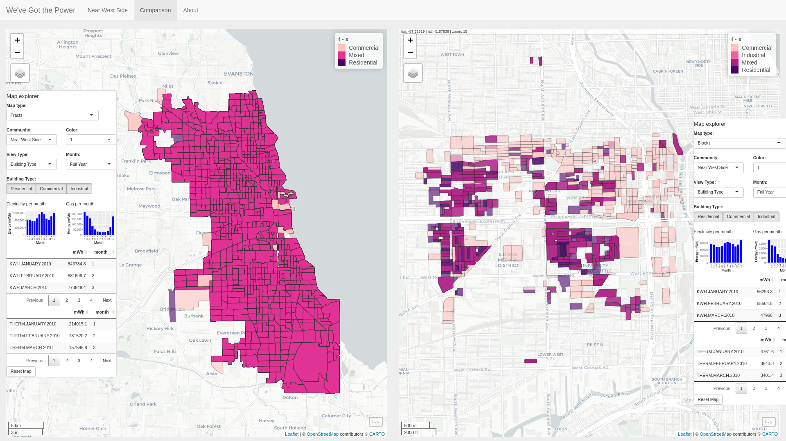
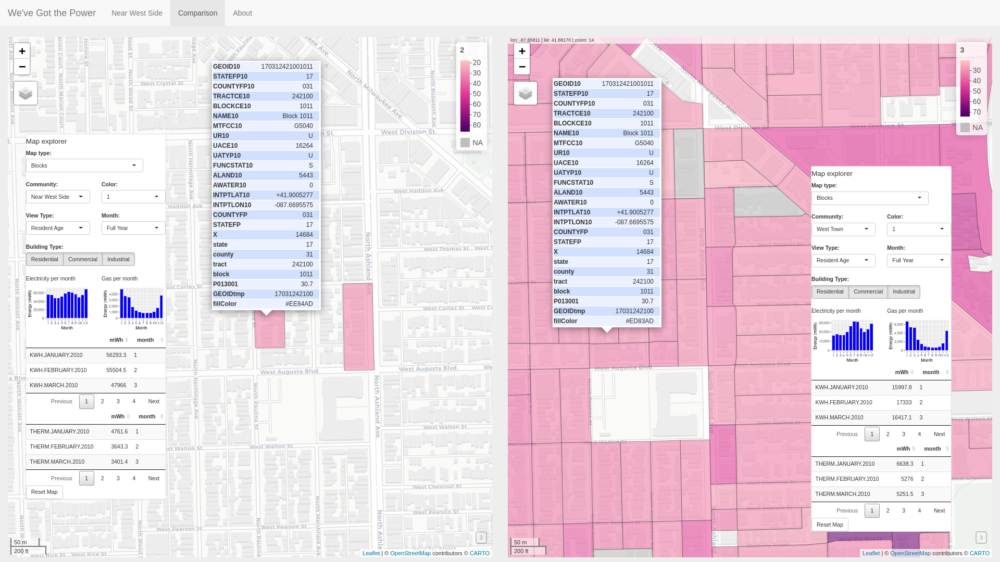

Introduction | Data | Interesting notes on the data
Link to the visualization:
https://parrot.shinyapps.io/project3/.
Data source: https://www.kaggle.com/chicago/chicago-energy-usage-2010
Author: David Shumway

Figure 1: "We've Got the Power": Introductory visualization highlighting building age in the Near West Side community area.
Project 3 - "We've Got the Power" visualizes power use in 77 community areas in Chicago, Illinois (Figure 2) in the year 2010 using R with a web interface built using the Shiny library. The spatially-based dataset is sourced from the City of Chicago and contains a mixture of Chicago and US Census data points. The dataset is primarily split into Census blocks, the smallest spatial container in the US Census, and can thus be further grouped by other larger Census arrangements, such as Census tract. Data points include Gas Use, Electricity Use, Building Age, Building Type, Building Height, and Total Population. In addition to the original dataset, as a proof of concept two additional Census data points are retrieved from the US Census dataset and included in the visualization: Resident age, and migrant worker housing units.

Figure 2: Map of Chicago neighborhoods [1].
The application is split into three tabs: an introductory tab visualizing one neighborhood in the dataset (Near West Side tab), a side-by-side view with the ability to visualize either neighborhood or Census tracts (Comparison tab), and an about tab. Each map in the visualization includes a Map Explorer control panel to aid in data navigation as well charts and tables to highlight and further inspect electricity and gas usage of selected data.

Figure 3: Visualizing building height in the Near North Side neighborhood by Census block (left map) while simultaneously browsing the top 10% tallest buildings in the dataset grouped by Census tract (right map).
Map type: Block versus Tract. Data can be visualized for each of Chicago's 77 neighborhoods by either block or tract groupings.
When viewing by block or tract, data visualization can be seen for Gas Use, Electricity Use, Building Age, Building Type, Building Height, Total Population, Resident Age, and Migrant Worker Housing Units. If viewing by block, only data for an individual neighborhood's blocks are shown. If viewing by tract, all tracts in Cook County are shown. An autocomplete communities drop-down menu allows users to quickly search and browse community names in the dataset.
Additional views are available for when viewing by Census tract to visualize the top 10 percentage of tracts in the dataset (i.e. in Cook County, Illinois). Top 10 percentage views include: Oldest; Newest; Tallest; Shortest; Most electric use; Most gas use; Highest population; Lowest population; Most occupied; Highest percentage of units rented; Youngest residents; Oldest residents; Most units dedicated to housing migrant workers.

Figure 4: Visualizing electricity use in all Cook County tracts in the full year (left map) while simultaneously browsing the top 10% of tracts based on electricity usage in the month of July (right map).
Map coloring. Three different color schemes may be used to color the data: Pink, blue, and orange. Colors were chosen using the online colorbrewer2.org coloring tool [2].
Month. The original dataset includes monthly usage for gas and electricity by census block. Whether viewing by block or by tract, when viewing electricity or gas use, the data can be further filtered to view usage for a single month.
Building type. Building types in the dataset include Residential, Commercial, and Industrial. Building type can be selected when viewing the data in both tract or block viewing mode. Views including the building type filter include electricity use (electricity use, top 10% electricity) and gas use (gas use, top 10% gas use). In addition, building type itself can be viewed in either tract or block viewing mode, and will thus visualize the types of building present in the given tract or block, respectively (Figure 5). In cases where multiple building types are included in a tract or block, the area is marked as "Mixed".

Figure 4: Visualizing gas and electricity for residential areas. In the left map, the top 10% residential July electricity use Cook County tracts are shown, while in the right map the top 10% residential December gas use Cook County tracts are displayed.

Figure 5: Visualizing building types in Cook County tracts (left map) and Near West Side blocks (right map).
Basemap layers. Basemaps for the visualization include CartoDB.Positron (default), CartoDB.DarkMatter, OpenStreetMap, Esri.WorldImagery, and OpenTopoMap.
Reset map. Each map includes a Reset Map to reset the map to its original view.
Grey out map controls when they are not in use or not usable.
Building type data should be shown using a quantitative color scheme rather than sequential color scheme.
Gain a better understanding of certain facets of the data. For example, certain Census blocks are left completely empty of any type of data. Is the corresponding Census data for these blocks also empty? Another example is regarding certain "stray" census blocks which are tied to distant neighborhoods (Figure 6). Why are these blocks included in distant neighborhoods? Is it on purpose or by accident?

Figure 6: Stray blocks: Comparing resident age in two Census blocks. The Census blocks are mysteriously added to separate neighborhoods in the original dataset. On the left, the Near West Side community has been selected but two stray blocks are included which are far to the north in the West Town community. On the right, the West Town community has been selected showing that indeed the Census blocks are part of that community.
Tie in a building dataset to help explain the data. The average age of residents on the UIC campus (Census block 170318419001021) is listed as 19.5 in 2010 Census data, while a few blocks away, the average age of residents for a Census block near the West Roosevelt Rd. / South Ashland Ave. intersection (Census block 170318429002002) is shown as 86. As UIC is familiar to us, it makes sense the campus has a low resident age because mostly students are living there. But what buildings are present at block 170318429002002? Tying in building data sets, such as commercially available data including the Yelp, Google Maps APIs, or even perhaps a realty site such as Zillow.com would help to explain these differences.
Tying in a building dataset might also help to explain why almost all of the blocks in the Chicago Loop neighborhood are mostly as the Commercial building type, while almost none are marked as the Residential building type.
[1] https://upload.wikimedia.org/wikipedia/commons/thumb/a/ac/Chicago_community_areas_map.svg/739px-Chicago_community_areas_map.svg.png
[2] https://colorbrewer2.org